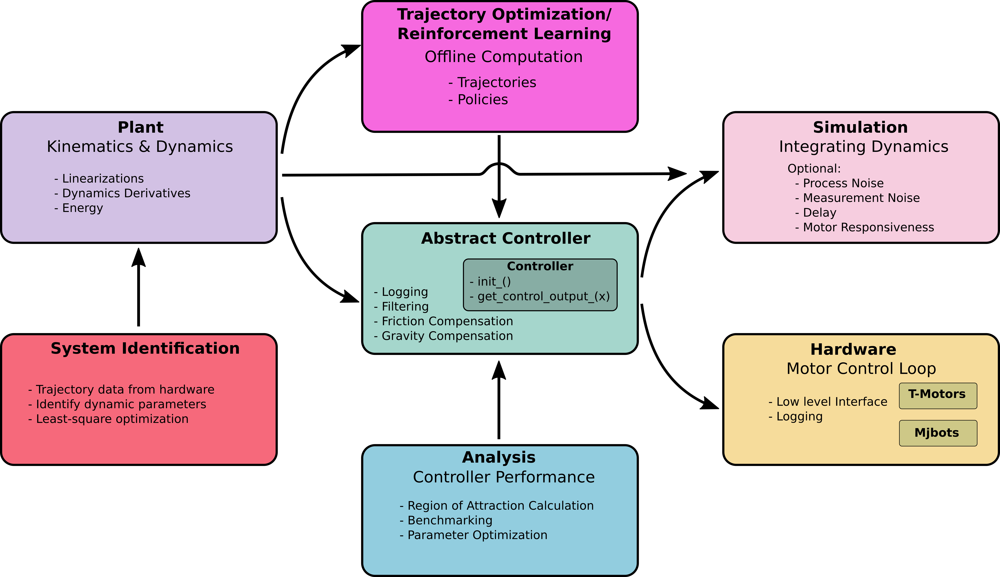

Repository Structure
Programming Language
The main programming language of this library is python, but other languages are also welcome. Besides python, there is a plant and a simulator as well as an iLQR solver written in C++. The iLQR solver has python bindings so that it can be used with the other components.
If you want to contribute something please use/create the folder in the src
directory with the name of the used programming language.
Repository Overview
The following overview covers the python code and the code which has python bindings to be used in the same ecosystem. The repository is organized in modules. The interplay of the modules is visualized in the figure below:
{kind=link}
There are standardized interfaces and file formats for the communication between the modules which are explained in the following.
For more detail on the controller class see
Model Parameters
The model parameters are the masses, lengths, … of the double pendulum. In this repository model parameters are stored in yml files. The keys of the yml files are
m1, m2, l1, l2, r1, r2, g, b1, b2, cf1, cf2, I1, I2, Ir, gr, tl1, tl2
While most classes and functions allow to directly set the model parameters in the initialization/function calls most of the time it is more convenient to use the model_parameters class. An object of that class stores all model parameters, reads/writes yml files in the correct format and can be parsed to most functions/classes in this library.
Some parameter sets are used so frequently (e.g. those that have been
identified for the real hardware) that they have been given names.
More precisely the name consists of a design and a model_id.
The design refers to a hardware design where specific materials have be used.
The model_id refers to a set of model parameters which have been identified (or
estimated) for that design.
The naming convention for the design follows
design_A.0, design_B.0, design_C.0, design_hD.0, …
i.e. design_ followed by a capital letter and a number. The number can
potentially used for minor changes in the design (such as different motor
units) in the future. The h in front of the capital letter indicates that the
design is only hypothetical at the moment, i.e. it has not been realized with
real hardware.
The model_id format is
model_1.0, model_1.1, model_2.0, model_3.0, …
i.e. model_ folowed by two integers. The first integer is the id which
identifies the model parameter set. The second integer can be used to simplify
the model.
0 refers to the full model
1 refers to the model where friction and motor inertia are set to 0
more simplified models may be used in the future.
Trajectory data
Trajectories can be computed with trajectory optimization methods such as direct collocation and iterative LQR. For the execution zhe trajectories can later be loaded by a stabilizing controller such as time varying LQR of a model predictive controller. The computed trajectories are stored in a csv file. The first line of the csv file is reserved for the header defining the data type in the corresponding column. The headers used are:
time
pos1,pos2,vel1,vel2,
acc1,acc2
pos_meas1,pos_meas2,vel_meas1,vel_meas2
pos_filt1,pos_filt2,vel_filt1,vel_filt2
pos_des1,pos_des2,vel_des1,vel_des2
tau_con1,tau_con2
tau_fric1,tau_fric2
tau_meas1,tau_meas2
tau_des1,tau_des2
K11,K12,K13,K14,K21,K22,K23,K24
k1,k2
Note
Not all headers/columns have to used.
Note
There should be no space after the separating comma.
The easiest way to stay consistent with this format is to use the functions
save_trajectory(...)
load_trajectory(...)
load_trajectory_full(...)
in double_pendulum.utils.csv_trajectory. These functions use the panda library to save/load the data. Missing header labels are skipped.